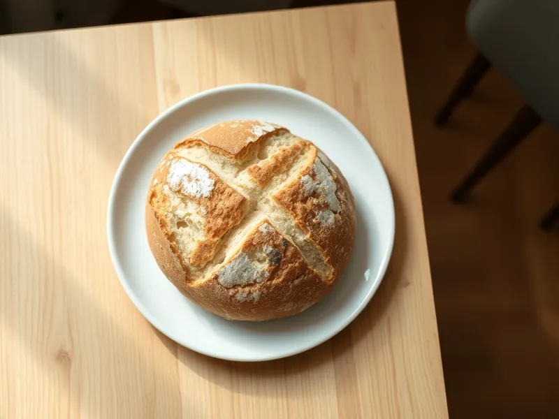

Бездрожжевой хлеб на кефире в духовке
Хлеб на соде и кефире без расстойки, тесто замешивается за 5 минут
85 мин8 порц.219 ккал на порциюБ 7 · Ж 2 · У 43Европейская кухня
Открыть в приложении: порции, таймеры, список покупок
Продукты на 8 порц.
- Мука пшеничная450 г
- Кефир2 стак.
- Сода1 ч. л.
- Соль1,25 ч. л.
- Сахар2 ч. л.
- Семечки подсолнечника по желанию2 ст. л.
Как готовить
- Разогрейте духовку до 200 °C (сильный жар). Застелите противень бумагой и присыпьте мукой.
- Смешайте в миске муку, соду, соль и сахар.
- Влейте кефир комнатной температуры, быстро перемешайте ложкой, затем соберите руками липкое тесто в ком, не вымешивая дольше 1 минуты.
- Сформируйте круглую буханку высотой 5-6 см, выложите на противень и сделайте глубокий надрез крестом на треть высоты. По желанию посыпьте семечками.
- Выпекайте 15 минут, затем убавьте до 180 °C (средний жар) и пеките ещё 25-30 минут до коричневой корочки и глухого звука при постукивании по дну.
- Заверните горячий хлеб в полотенце и остудите 30 минут.
Совет. Сода начинает работать сразу после встречи с кефиром, поэтому ставьте тесто в духовку немедленно: через 15 минут хлеб уже плохо поднимется.